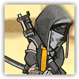
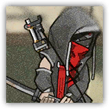

|
 |
使用特殊攻击手段的作战人员。使用了一种特制的武器进行攻击，并且在交战中会习惯于更换作战手法，变得更加难以抵挡。 |
| AC 14 | 先攻 +2（12） |
| HP 60（8d8+24） | |
| 速度 30 尺 | |
| 调整 | 豁免 | 调整 | 豁免 | 调整 | 豁免 | |||||||||
|---|---|---|---|---|---|---|---|---|---|---|---|---|---|---|
| 力量 | 17 | +3 | +3 | 敏捷 | 14 | +2 | +2 | 体质 | 16 | +3 | +3 | |||
| 智力 | 10 | +0 | +0 | 感知 | 13 | +1 | +3 | 魅力 | 10 | +0 | +0 |
| 技能 威吓+2 |
| 装备 长剑，镶钉皮甲 |
| 感官 被动察觉11 |
| 语言 通用语，萨卡兹语 |
| CR 3（XP 700；PB +2） |
|
 |
使用特殊攻击手段的作战人员。和一般寻仇者不同，身手更加不凡。使用了一种特制的武器进行攻击，并且在交战中会习惯于更换作战手法，变得更加难以抵挡。需要小心应对。 |
| AC 14 | 先攻 +2（12） |
| HP 136（16d8+64） | |
| 速度 30 尺 | |
| 调整 | 豁免 | 调整 | 豁免 | 调整 | 豁免 | |||||||||
|---|---|---|---|---|---|---|---|---|---|---|---|---|---|---|
| 力量 | 18 | +4 | +4 | 敏捷 | 14 | +2 | +2 | 体质 | 17 | +3 | +3 | |||
| 智力 | 10 | +0 | +0 | 感知 | 14 | +2 | +5 | 魅力 | 11 | +0 | +0 |
| 技能 威吓+2 |
| 装备 长剑，镶钉皮甲 |
| 感官 被动察觉12 |
| 语言 通用语，萨卡兹语 |
| CR 5（XP 450；PB +2） |